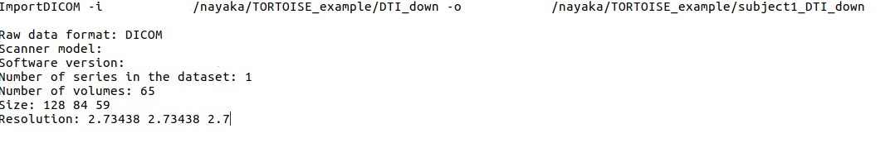
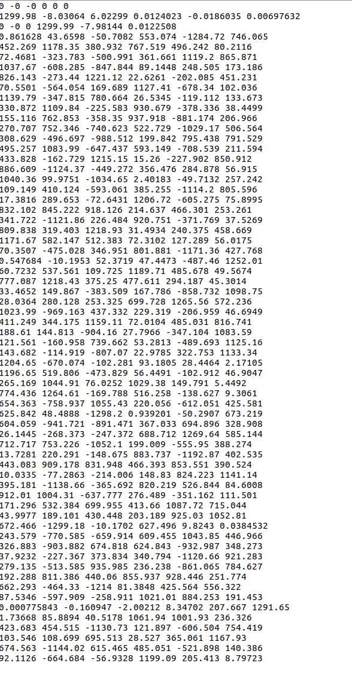
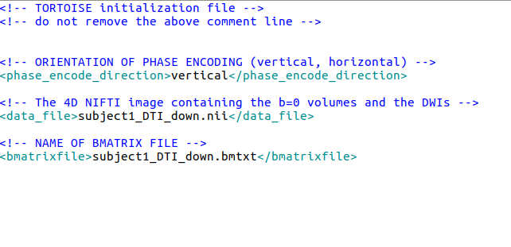

4. Your Import Outputs- What to expect¶
The following files will be written in the <prefix>_proc folder that will be created outside of the raw folder, following the import routine.
example of each file is as follows
4.1. Info File¶
4.2. bmtxt¶
4.3. List File¶
4.4. nii File¶
The raw file is converted to NII format using the dcm2niix tool. No associated bvecs and bvals are saved with this nii file. You can create the associated bvecs and bvals by using the executable TORTOISEBmatrixToFSLBVecs. This will convert the bmtxt written in the proc folder to bvals and bvecs. Although, TORTOISE will still need .list and associated bmtxt file to perform the processing.